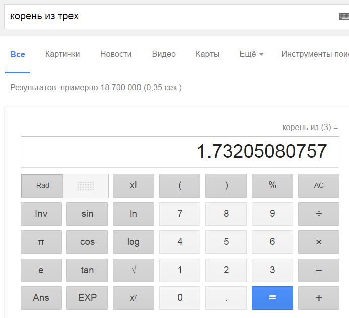

Что умеет калькулятор Google?
Если ввести в поисковую строку Google математическое выражение, то калькулятор вычислит результат.
Поисковый запрос 2^10 / 4 + 1 возвращает 257.
Многие не знают всех возможностей калькулятора Google. Например, что он понимает русский язык.

Калькулятор Google выдаёт значения пи, e, скорости света и всех остальных констант, он производит с ними вычисления. Кроме того, калькулятор знает функции.
Поисковый запрос log(16) возвращает 4 (получается, по умолчанию он считает по основанию 2).
Считать по произвольному основанию можно так: log 1024 / log 4 возвращает 5.
Поисковый запрос cos(pi) возвращает -1.
Калькулятор умеет переводить одни метрические единицы в другие.
3 килограмма в фунтах = 6,61387.
5 дюймов в сантиметрах = 12,7.
25 миль в километрах = 40,2336.
Конечно, и здесь можно производить математические операции.
100 километров в час / 2,8 секунды = 9,92063492 м / c2
Калькулятор конвертирует цифры в разные системы счисления.
15 в hex = 0xF
12*5 в binary = 0b111100
Калькулятор умеет даже переводить римские цифры в арабские. Например, в десятичные.
DCLXVI in decimal = 666
А теперь попробуем объединить всё вместе.
Ответ на главный вопрос жизни, вселенной и всего такого * пи * e * число Авогадро * скорость света = 6.47537997 × 1034 м / с.
Советы и секреты №1
Советы и секреты №3
Теги: